역기획서 · 영웅
영웅 스킬 56종
스킬 유형 분포: Ani 41, Passive 11, Bullet 4.
전체 스킬 표
| 영웅 | 스킬 | 등급 | 유형 | 대상 | 쿨(초) | 범위 | 피해 | 지속 | 타수 | 설명 | |
|---|---|---|---|---|---|---|---|---|---|---|---|
| VC-01 | 전개 | C | Ani | 0 | 25 | 0 | 0 | 0 | 0 | 본체 30%의 능력치를 가진 드론 최대 1마리 소환 | |
| VC-01 | 아머 프로토콜 | R | Ani | 0 | 15 | 0 | 0 | 6 | 0 | 8초간 자신과 모든 드론의 받는 피해 50% 감소 | |
| VC-01 | 리페어 필드 | E | Ani | 0 | 18 | 0 | 0 | 0 | 0 | 자신과 드론 포함 모든 아군의 최대체력 35% 회복 | |
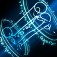 | VC-01 | 옵티머스 콜 | RD | Ani | 0 | 100 | 0 | 0 | 0 | 0 | 60초간 본체 200%의 스탯을 가진 드론 소환 |
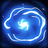 | 네블 | 리액트 | C | Passive | 0 | 0 | 0 | 0 | 0 | 0 | 일반 공격 시 대상의 이동속도 35% 둔화 , 사거리 내 적 발견 시 이동 |
| 네블 | 루나티아 | R | Ani | 0 | 12 | 6 | 100 | 2 | 3 | 일직선으로 물을 발사하여 100%의 광역 데미지로 3번 타격 | |
| 네블 | 딥 서지 | E | Ani | 1 | 15 | 0 | 350 | 0 | 0 | 단일 타겟에게 350%의 데미지 타격 후 3초간 침묵 | |
| 네블 | 아쿠아티카 | RD | Ani | 0 | 40 | 0 | 350 | 0 | 0 | 파도를 소환해 가장 적이 많은 곳으로 350%의 광역 데미지 타격 후 모든 적 2초간 90% 둔화 | |
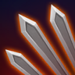 | 네오 | 더블어택 | C | Passive | 0 | 0 | 0 | 0 | 0 | 0 | 공격시 타격 횟수 1회 증가 |
| 네오 | 퀀텀 드롭 | R | Ani | 0 | 6 | 8 | 100 | 1 | 1 | 에너지를 응축해 바닥을 내려찍어 근처의 적에게 100%의 피해후 타격된 적당 최대체력의 6% 회복 | |
| 네오 | 크래쉬 | E | Ani | 0 | 5 | 4 | 130 | 2 | 2 | 회전하며 주변 적들에게 초당 130%의 데미지를 2번씩 타격 | |
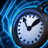 | 네오 | 오버쿨럭 | RD | Ani | 0 | 20 | 0 | 0 | 8 | 0 | 5초동안 공격속도와 이동속도 50%증가 |
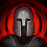 | 드렉스 | 전사의 의지 | C | Passive | 0 | 0 | 0 | 0 | 0 | 0 | 체력이 80% 이하시 흡혈 활성화 |
| 드렉스 | 다크 헬릭스 | R | Ani | 0 | 5 | 4 | 100 | 2 | 1 | 최대 체력의 10% 회복후 회전하며 주변 적들에게 100% 데미지 두번 타격 | |
| 드렉스 | 분노 | E | Ani | 0 | 18 | 0 | 0 | 5 | 0 | 5초동안 공격속도 50% 및 공격력 50% 증가 | |
| 드렉스 | 발할라 | RD | Ani | 0 | 35 | 0 | 0 | 0 | 0 | 10초동안 거대화 및 최대체력 100% 공격력 80% 증가 | |
| 로더 | 넉백 | C | Passive | 0 | 0 | 0 | 0 | 0 | 0 | 일반 공격시 대상을 뒤로 넉백 | |
| 로더 | 와일드 트래커 | R | Ani | 15 | 9 | 0 | 150 | 5 | 3 | 최대 15마리의 적에게 150%의 데미지 타격 (넉백적용) | |
| 로더 | 위험 감지 | E | Ani | 0 | 6 | 0 | 0 | 0 | 0 | 랜덤한 방향으로 이동하며 모든 공격 회피 후 200%의 데미지 타격 | |
| 로더 | 데스 마크 | RD | Ani | 0 | 17 | 0 | 1,000 | 0 | 0 | 최대 체력이 가장 많은 적에게 1000% 데미지 타격(물리 공격력을 마법 피해로 변화해 타격) | |
| 벨라 | 금제 | C | Passive | 0 | 0 | 0 | 80 | 5 | 3 | 기본 공격을 못하는 대신 1초마다 근처에 적이있으면 사거리내 랜덤 위치로 텔레포트 | |
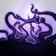 | 벨라 | 블리자드I | R | Bullet | 7 | 2 | 0 | 150 | 5 | 3 | 최대 7마리의 적에게 150%의 피해를 준다 |
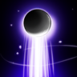 | 벨라 | 블리자드II | E | Bullet | 30 | 3 | 0 | 150 | 0 | 0 | 최대 30마리의 적에게 150%의 피해를 준다 |
| 벨라 | 죽음의 손아귀 | RD | Ani | 20 | 30 | 0 | 25 | 0 | 0 | 최대 20마리의 적에게 대상의 현재 체력 25%의 마법 피해 타격 | |
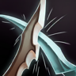 | 아라 | 흘리기 | C | Passive | 0 | 0 | 0 | 0 | 0 | 0 | 확률적으로 모든 공격 회피 (일반 5% , 희귀 10% , 영웅 20% , 레전더리 60%) |
| 아라 | 순보 | R | Ani | 0 | 6 | 30 | 0 | 0.5 | 0 | 적의 뒤로 순간적으로 이동후 데미지 타격 | |
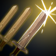 | 아라 | 풍뢰검 | E | Passive | 0 | 0 | 0 | 0 | 0 | 0 | 흘리기 성공시 받은 피해의 15% 회복 |
| 아라 | 청룡난무 | RD | Ani | 0 | 20 | 5 | 130 | 5 | 2 | 여러개의 검귀를 날리며 5초간 초당 130%의 데미지 두번씩 타격 | |
| 아스나 | 연발 사격 | C | Passive | 0 | 0 | 0 | 0 | 0 | 0 | 공격시 타격 횟수 2회 증가 최대 3회타격 | |
| 아스나 | 정밀 사격 | R | Ani | 0 | 15 | 0 | 0 | 5 | 0 | 5초간 공격속도 공격력 25% 증가 | |
| 아스나 | 게임 오버 | E | Ani | 0 | 6 | 0 | 300 | 0 | 0 | 적에게 300% 데미지 타격 6초(물리 공격력을 마법 피해로 변화해 타격) | |
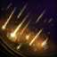 | 아스나 | 함대 호출 | RD | Ani | 0 | 30 | 7 | 70 | 5 | 5 | 주변 적에게 초당 70%의 피해 5번씩 타격 |
 | 알베도 | 강타 | C | Passive | 0 | 0 | 0 | 0 | 0 | 0 | 일반 공격시 50% 추가피해 , 50% 확률로 타겟 0.5초 기절 |
 | 알베도 | 분쇄 | R | Ani | 0 | 10 | 6 | 130 | 0 | 0 | 주변 적들에게 130% 데미지를 주고 최대 체력 20% 회복 |
 | 알베도 | 헌신 | E | Ani | 150 | 30 | 0 | 0 | 0 | 0 | 주변 모든 적들을 도발후 7초간 받는 피해 40% 감소 후 받은 마법 피해의 30% 반사 |
 | 알베도 | 전사의 의지 | RD | Ani | 0 | 30 | 0 | 0 | 10 | 0 | 10초동안 방어력 마법 방어력 100% 증가 |
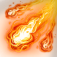 | 알피아 | 파이어볼 | C | Bullet | 5 | 1.5 | 3 | 70 | 0 | 0 | 최대 5마리의 적에게 70%의 데미지를 준다 |
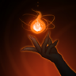 | 알피아 | 파이어 러쉬 | R | Ani | 0 | 9 | 0 | 200 | 0 | 0 | 에너지를 압축해 200%의 데미지 타격 |
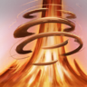 | 알피아 | 익스플로전 | E | Bullet | 20 | 20 | 4 | 300 | 0 | 0 | 최대 20마리의 적에게 300%의 데미지를 준다 |
| 알피아 | 불의가호 | RD | Ani | 0 | 35 | 6 | 0 | 5 | 0 | 5초동안 받는 물리피해 무효 및 공격력 100% 증가 | |
| 에드릭 | 회복 | C | Ani | 0 | 15 | 0 | 0 | 1 | 0 | 최대체력의 30% 회복 | |
| 에드릭 | 리플렉트 | R | Ani | 0 | 15 | 0 | 0 | 10 | 0 | 10초동안 받은 물리 피해의 60% 데미지 반사 ( 몬스터에겐 700%의 데미지 ) | |
| 에드릭 | 방어태세 | E | Ani | 0 | 20 | 0 | 0 | 8 | 0 | 8초동안 방어력과 마법 방어력 50% 증가 및 최대체력의 15% 회복 | |
| 에드릭 | 절대 방패 | RD | Ani | 0 | 25 | 0 | 0 | 5 | 0 | 5초간 받는 피해 40%감소 , 모든 적 1초 기절 | |
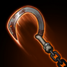 | 엘레나 | 사슬 공명 | C | Passive | 0 | 0 | 0 | 0 | 0 | 0 | 일반 공격 3회마다 사슬이 100%의 데미지로 무작위 대상 공격 |
| 엘레나 | 회전 사슬 | R | Ani | 0 | 7 | 10 | 130 | 0 | 0 | 사슬을 회전하여 130%의 데미지 광역 타격 | |
| 엘레나 | 사슬 감옥 | E | Ani | 0 | 15 | 0 | 250 | 0 | 0 | 수많은 사슬을 엮어 250%의 데미지 타격 후 3초간 기절 | |
| 엘레나 | 멸각의 사슬 | RD | Ani | 0 | 45 | 50 | 200 | 0 | 0 | 주변 전체를 사슬로 200% 데미지 5회 타격 후 2초간 광역 기절 | |
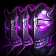 | 제로 | 에코 립 | C | Ani | 0 | 5 | 30 | 0 | 0.5 | 0 | 적의 뒤로 순간적으로 이동후 크리티컬 타격 |
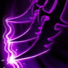 | 제로 | 사이버플러리 | R | Ani | 0 | 10 | 0 | 0 | 0 | 0 | 크리티컬 데미지로 5회 타격 |
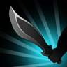 | 제로 | 레이턴시 | E | Ani | 0 | 15 | 0 | 0 | 5 | 0 | 5초간 크리티컬 확률 20% 및 크리티컬 공격력 50% 상승 |
| 제로 | 에테르 싱크 | RD | Ani | 0 | 25 | 30 | 0 | 0.5 | 0 | 최대 10명의 적에게 순간이동후 200%의 크리티컬적용 데미지 타격 동일 타겟 최대 4회 공격가능 시전중 50%의 확률로 모든 공격 회피 | |
| 카이라 | 사냥 본능 | C | Passive | 0 | 0 | 0 | 0 | 0 | 0 | 사거리 밖의 대상에게 일반 공격 시, 도약하여 공격합니다,일반 공격이 광역공격으로 바뀝니다. | |
| 카이라 | 잡아뜯기 | R | Ani | 0 | 8 | 0 | 150 | 0 | 0 | 단일 타겟에게 150%의 데미지 두번 타격 후 2초간 스턴 | |
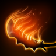 | 카이라 | 분노의 베기 | E | Ani | 0 | 14 | 4 | 150 | 0 | 0 | 검을 휘둘러 주변 적들에게 150%의 데미지 두번 타격 후 최대 체력이 가장 낮은 적에게 도약 |
| 카이라 | 야수화 | RD | Ani | 0 | 50 | 0 | 0 | 5 | 0 | 야수로 변신해 모든 적을 1.5초 기절시키고, 10초간 최대 체력 100% 증가,회복 및 받는 피해의 50%를 회복합니다. |
원본: Skill_Scriptable 56건. Skill_Dmg가 0인 스킬이 많아 실제 계수는 코드에 있는 것으로 보입니다 추정
전투·피해 계산 규칙 (1.13.14 소스 기준)
APK(1.14.0.1)는 IL2CPP라 메서드 본문이 없어서, 원본 저장소의 1.13.14 소스에서 규칙을 읽었습니다. 1.14에서 바뀌었을 수 있습니다.
| 시스템 | 규칙 | 값 | 근거 | |
|---|---|---|---|---|
| 전투 공식 | 방어 감쇄 | dmg*4000/(4000+DFS); 물리=p_DFS, 마법=o_DFS | Character.cs:424,429; Monster/Monster.cs:356,361 | |
| 전투 공식 | 플레이어 탄 치명 | Random(0,100)<cri -> dmg*cri_ATK/100 | Attack/Bullet.cs:184,189 | |
| 전투 공식 | 몬스터 치명 | ATK*cri_ATK (나누기 100 없음) | Monster/Monster.cs:512 | |
| 전투 공식 | 공격 쿨다운 | 1/ATK_Speed 초 | Character.cs:411 | |
| 전투 공식 | ATK 결정 | 메이지 ? o_ATK : p_ATK | Player/Player.cs:378 | |
| 전투 공식 | 세트 Plus_ATK | 공격자 피해 dmg += dmg*Plus_ATK | Player/Player.cs:869; Monster/Monster.cs:353 | |
| 전투 공식 | 플레이어 피격 감소 | 물리·마법 모두 dmg*=(1-Plus_ODFS) (PDFS 미사용) | Character.cs:423,428 | |
| 전투 공식 | 몬스터 피격 감소 | 마법*(1-Plus_PDFS), 물리*(1-Plus_ODFS) 교차 | Monster/Monster.cs:357,362 | |
| 전투 공식 | PVP 받는 피해 | x0.7 (PVP/Guild_Arena) | Character.cs:435 | |
| 전투 공식 | PVP 공격 보정 | ATK x0.6, cri_ATK=100+(cri_ATK-100)*0.6 | Player/Player.cs:375,382 | |
| 전투 공식 | PVP 최대HP | x2.5 | Player/Player.cs:527 | |
| 전투 공식 | PVP 시작 경직 | PVP 0.5초, 길드아레나 적 0.7초/아군 0.5초 | Player/Player.cs:314-319 | |
| 전투 공식 | 타깃 우선순위 | 팔라딘>워리어>메이지>헌터>어쌔신, 동순위는 거리 | Character.cs:267-271; Monster/Monster.cs:FindClosestPlayer | |
| 전투 공식 | 타깃 탐색 거리 | 30 | Character.cs:49 | |
| 전투 공식 | 넉백 | 거리 3.5 / 0.5초, 이그니토·골드던전 면역 | Attack/Bullet.cs:177 | |
| 전투 공식 | 네블 평타 둔화 | 1초 이속 -35% | Attack/Bullet.cs:162 | |
| 전투 공식 | 즉사 | HP<=20% 즉사, 보스 면역 | Player/Player.cs:1127; Monster/Monster.cs:559 | |
| 전투 공식 | 헌터 방어 | DFS*(1+잃은HP비율*1.5) | Player/Player.cs:1048 | |
| 전투 공식 | 워리어 피해감소 | Lerp(0,90,잃은HP비율)% | Player/Player.cs:1061 | |
| 전투 공식 | 어쌔신 은신 회복 | 1초 10%, 2초 20% 최대HP | Player/Player.cs:1091,1097 | |
| 전투 공식 | 메이지 Mage_SH | HP<50% 순간이동+2초 무적 | Player/Player.cs:1138 | |
| 전투 공식 | 거리비례 피해 | ATK*(1+0.1*거리) | Player/Player.cs:1235 | |
| 전투 공식 | 에테르 다거 | 은신 종료 후 1초 ATK+50% | Player/Player.cs:1243 | |
| 전투 공식 | 팔라딘 R | 반경4 ATK*1.5, Paladin_H 20% 1초 스턴 | Player/Player.cs:1266-1301 | |
| 전투 공식 | AOE/팔라딘R 치명 미적용 버그 | GetDamage에 m_DMG(비치명) 전달 | Player/Player.cs:1186,1304 |